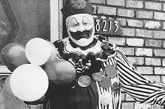

Hstoria Completa

John Wayne Gacy nasceu em 17 de março de 1942 nos subúrbios de Chicago, a terceira cidade mais populosa dos EUA,
no Estado de Illinois. Seus pais eram imigrantes europeus que decidiram se instalar ali pela grande oferta de trabalho por parte das abundantes
indústrias da área. Gacy era um menino gordinho, muito apegado às suas duas irmãs mais velhas e à sua mãe. Isso enfurecia seu pai, um alcoólatra
que abusava de sua família. Batia no filho com um cinto de couro e o humilhava publicamente dizendo que era um “maricas”, “estúpido” e “filhinho da mamãe”.
Quando tinha nove anos, um amigo da família abusou dele sexualmente, mas o menino guardou silêncio. O incidente o perseguiu durante toda a vida.
Primeira condenação
Dois anos depois daquele terrível episódio, Gacy caiu de um balanço e bateu a cabeça.Formou-se um coágulo de sangue, mas passou despercebido até ele fazer 16 aos, quando começou a sofrer desmaios e ataques
semelhantes aos de epilepsia. Seu pai pensava que aquelas convulsões eram fingidas e batia nele enquanto estava inconsciente. Anos mais tarde,
Gacy foi ver um médico, que receitou alguns medicamentos para dissolver o coágulo. A vida começou a sorrir para ele. Mas era só uma miragem. Gacy passou por
quatro institutos e nunca chegou a se formar, o que diminuía suas possibilidades de conseguir um emprego.
Quando fez 20 anos, seu pai lhe recomendou que saísse de casa e lhe deu uma passagem de ônibus para Las Vegas. Gacy conseguiu emprego em uma funerária, mas durou apenas três meses. Estava obcecado em observar os cadáveres que devia proteger.
Voltou para Chicago, matriculou-se em uma escola de negócios e se formou. Aquilo o ajudou a conseguir emprego em uma fábrica de sapatos, embora tivesse de se
mudar para Springfield, outra cidade de Illinois. Lá conheceu aquela que seria sua primeira esposa, Marlynn Myers, com quem se casou em setembro de 1964. Foi
promovido rapidamente para o cargo de supervisor. No entanto, sua vida privada continuava um desastre.
Gacy se mudou depois para Waterloo, em Iowa, onde a família de sua esposa tinha um restaurante,
no qual ocupou o cargo de gerente. Foi aí que começou a sentir atração pelos adolescentes. O historiador colombiano Esteban Cruz narra no livro Vampiros, Caníbales y Payasos Asesinos (“vampiros, canibais e palhaços assassinos”) que ele tentava chantagear os jovens do estabelecimento para que lhe fizessem sexo oral. Seu histórico de crimes começou em 1967, quando estuprou Donald Voorhees, um jovem de 15 anos. Foi condenado a dez anos de prisão, que não cumpriu − obteve liberdade condicional após 16 meses de cadeia. Aquele acontecimento provocou o divórcio.
Depois de sair da prisão, Gacy fundou uma empresa dedicada à construção, com a qual enriqueceu.Comprou uma casa em um bairro exclusivo de Chicago e ali
reencontrou uma antiga colega de escola com duas filhas, com a qual começou a compartilhar a vida. Transformado em um empresário de sucesso,
inscreveu-se no Partido Democrata e decidiu aumentar sua popularidade criando um personagem, o palhaço Pogo, que ficou famoso nas festas e nos hospitais infantis da cidade, onde distribuía balões e bichinhos de pelúcia pagos com seu dinheiro.
“Cidadão exemplar”
Seus vizinhos o consideravam um cidadão exemplar, embora reclamassem constantemente do cheiro de putrefação que
saía de sua casa. Gacy lhes dizia que ele mesmo se encarregaria de limpar os canos do esgoto. Mas a origem do mau cheiro era bem diferente. A descoberta
foi por acaso. A mãe do adolescente Robert Piest denunciou seu desaparecimento. Colocou a polícia na pista de Gacy ao dizer que ele havia oferecido um emprego
a seu filho. A polícia conseguiu entrar na casa e, ao descer para o porão, encontrou o inferno. Sob um alçapão estavam empilhados seis cadáveres em diferentes
estados de decomposição. Outros corpos foram encontrados em um rio próximo.
Entre 1972 e 1978, o palhaço bonachão estuprou e assassinou 33 meninos, embora ele mesmo tenha reconhecido que o número era maior. O julgamento
começou em 6 de fevereiro de 1980, mas Gacy nunca colaborou, por isso foi impossível localizar o paradeiro de algumas de suas vítimas. Seus advogados
alegaram que sofria de graves distúrbios mentais, algo que os relatórios periciais descartaram. A prova mais concludente foi o depoimento de Jeff Rignall, um
adolescente que conseguiu escapar de Pogo e relatou as torturas a que foi submetido. Explicou que o conheceu na rua, onde Gacy lhe ofereceu maconha. Rignall
subiu então no carro de Gacy e este lhe cobriu o rosto com um lenço embebido de clorofórmio para deixá-lo inconsciente. Era seu modus operandi.
Em 13 de março de 1980, foi julgado culpado e condenado à morte. Gacy se transformou em uma celebridade macabra que recebia visitas de professores
universitários, estrelas do rock e mulheres que se sentiam atraídas por sua história. Em sua cela, pendurou dezenas de pinturas nas quais se retratava
vestido de palhaço, e as vendeu por grandes somas de dinheiro. Depois de ficar 14 anos no corredor da morte, em 10 de maio de 1994 foi aplicada a injeção
letal que acabou com sua vida. Faltavam poucas semanas para ele completar 53 anos. Suas últimas palavras foram: “Vão para o inferno! Vocês nunca saberão onde
estão os outros corpos”.